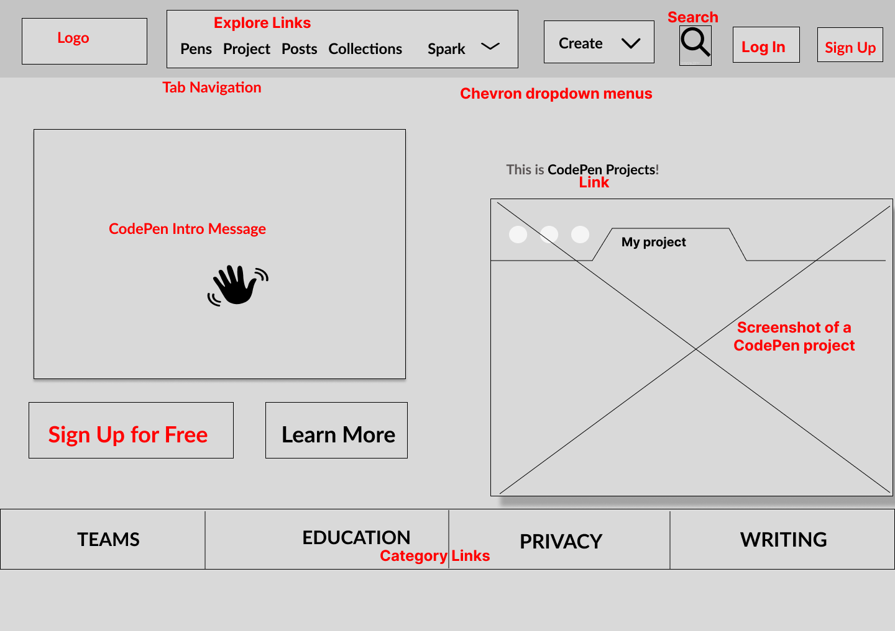

I created a low-fidelity wireframe of CodePen landing page using Figma app. 
Timmy O'Mahony's Website uses repeatedly the following colors:
Beige #f0f0e8: for the body back-ground color
Black #000000: for the headings and paragraphs
Sandstone #72645c: for some links, datetime and heading2
A User Story for Youtube website : Lily’s Home Office Renovation
Lily is a successful beauty and lifestyle Youtuber with one million subscribers on her youtube channel.
She wants to upload a series of videos showcasing the before-and-after renovation of her home office room. In collaboration with the paint brand BRUGUER, she aims to feature a few color paint options and enhance the brand’s visibility.
Lily wants to encouraged her visitors to click on her affiliate links , redirecting them to the BRUGUER website to boost its number of visitors. She earns a commission based not only on the video-view numbers but also the successful purchases made with her links.
Youtube features that Lily may need: Upload settings, Active Affiliate Links in Description Box below her videos, Audience Engagement Data to track the number of views, Comments Section, Community Posts to engage with her audience, just to mention a few.
The prime objective of:
Facebook is to connect people locally or around the world, helping social interactions and the creation of similar interest groups.
Twitter is to provide a plataform for people to share their opinions and get information with very short real-time messages.
Google is to provide access to a wide range of information through its search engine.
Youtube is to provide a plataform for people to share or watch video content.